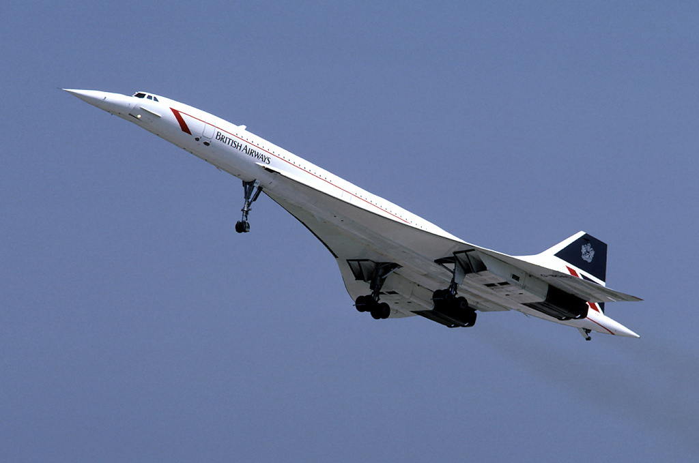
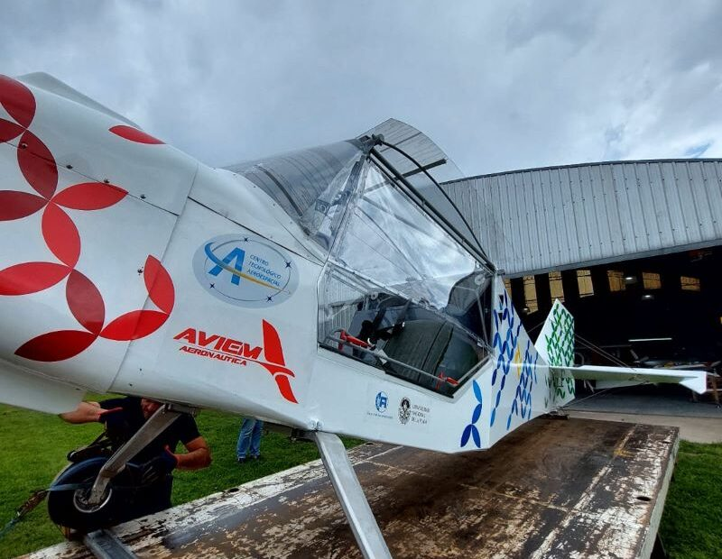

Redescubre 120 años de la revolución del transporte
Quienes somos
Buscamos preservar la historia de la aviación en un lugar accesible y gratuito para todos. Nos dedicamos a mantener viva esta historia, ofreciendo un espacio de fácil acceso y totalmente gratuito para que personas de todas las edades y procedencias puedan explorarla y disfrutarla. Creemos en la importancia de conservar y compartir este legado, para que las generaciones presentes y futuras puedan apreciar el increíble progreso y la fascinante evolución de la aviación a lo largo del tiempo.
Galeria de fotos


- 
- 